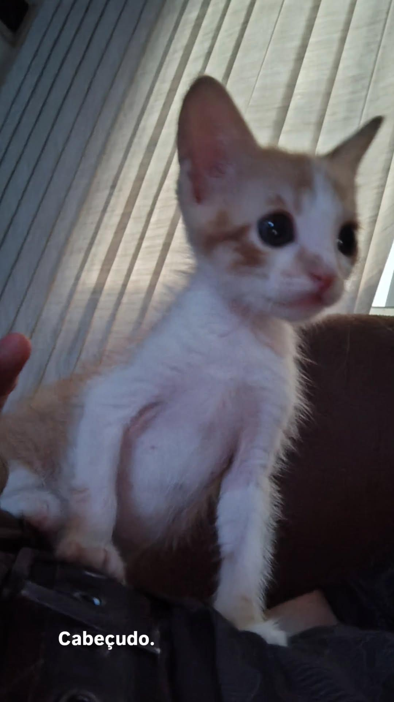

SUAS CARACTERÍSTICAS
Características Físicas:
Frederico atualmente (24/05/2025) possui 3 meses e pouco, e tem algumas características peculiares. Ele é vagabundo e não trabalha, não estuda e não faz academia, o que faz ele ter o shape de um cachaceiro que vive caindo nos bares da grande capital de Feira de Santana, que almoça cuscuz com tapioca e caju.
Ele tem:
🔘 Orelhas pontudas que parecem com um morcego.
🔘 Um focinho todo macio.
🔘 Uma pelagem muito específica, listrada com laranja-abóbora e amarelo-açafrão, com uma proporcão anti-linear de branco em sua parte inferior(barriga).
🔘 Uma barriga muito grande, cheia de leite e sachê. Muito macia também, dá para usar como travesseiro.
🔘 Um bumbum seco.
🔘 Tem olhos bem grandes.
🔘 Ele é cabeçudinho.
Além disso, vale ressaltar que sua estatura ainda não está 100% desenvolvida, mas estima-se que ele terá um grande porte e um peso ideal.

Características psicológicas:
Como já foi dito, ele é um vagabundo. Ou seja, só dorme, come, faz suas necessidade e brinca.
Seu ponto forte é o sono profundo, onde ele adquiriu uma técnica secreta para pegar no sono com força. Envolve fingir que minha mão é a mamãe dele, e começar a lamber e ficar manhoso com a cara enfiada nela. Não demora cinco minutos e Frederico entra em modo repouso.
Ele brinca simulando seus ancestrais, buscando aniquilar suas presas com seus dentes afiados e suas garras vorazes. Infelizmente, as únicas presas que ele tem em seu campo visão são os pés das pessoas ao seu redor, ou o braço, caso elas estejam em seu alcance. Ele é safado e sabe muito bem do que faz, não adianta o quanto ele disfarce, mas eu sei que ele se finge de bobo para não pagar impostos.